I'm starting a new Cataclysm: Dark Days Ahead (CDDA) game, and I thought'd be cool to document my adventures. Maybe it'll force me to play more thoughtfully, not falling victim to that classic killer of permadeath roguelikes: Hubris.
Cataclysm: Dark Days Ahead is a turn-based survival game set in a post-apocalyptic world. Struggle to survive in a harsh, persistent, procedurally generated world. Scavenge the remnants of a dead civilization for food, equipment, or, if you are lucky, a vehicle with a full tank of gas to get you the hell out of Dodge. Fight to defeat or escape from a wide variety of powerful monstrosities, from zombies to giant insects to killer robots and things far stranger and deadlier, and against the others like yourself, that want what you have…
Even without mods, CDDA has an incredible world and set of experiences, but I want to spice things up even more with some magic! I'll be using two of the most popular mods: Arcana and Magic Items by chaosvolt, which is not included with the game, and Magiclysm which is included with the game, so you don't need to download anything extra, just enable it.
Our guy is Raymon Ortega, Would-be Wizard. He's extremely smart—which will be important for using magic—but is lacking in physical capability and is a bit flimsy. He's also pretty short.
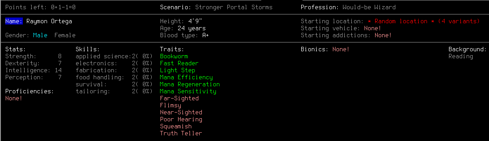As you can see from the character creation screen, there's quite a bit going on. I'll run through the important stuff.
Raymon's initial skills are all in the crafting skills: fabrication, tailoring, etc. which will give us a bit of a leg up as we start to craft before we get books.
You've managed to get to a shelter, but reality has grown weaker than normal, and portal storms will be quite strong.
Here we are in the evacuation shelter set up by the Department of Emergency Management before the apocalpyse. We're safe, for now, but the rest of the world has gone down the drain faster than a wedding ring. It is morning, Spring, day 61.
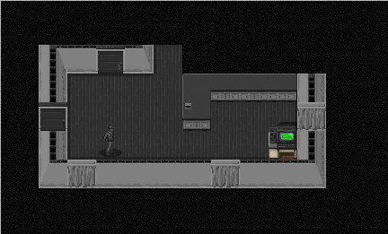Can't see much in the dark, but there's a computer over in the corner there.
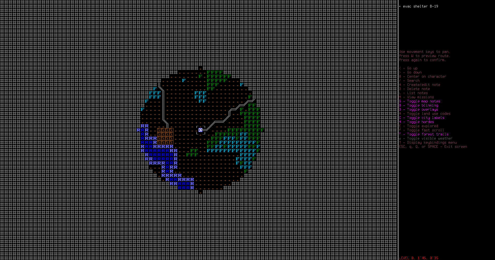We also know a bit about the area where we are. The map can be a bit hard to read, but in the middle is our evacuation shelter. There's a big dump a little ways to the west, and some roads, forest (green F), swamp (cyan F), and a river (blue R), but no other civilization.
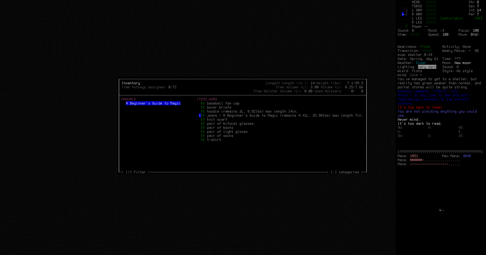We start out with some basic clothes, a hoodie (this is nice!), jeans, boots (these are also nice!), and A Beginner's Guide to Magic in our jeans pocket.
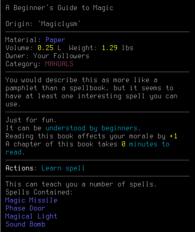A Beginner's Guide to Magic is a spell book, and it provides some really basic but also really useful spells. This will be our introduction to wizardry.
Now let's go check out the computer, and see what it's got for us.
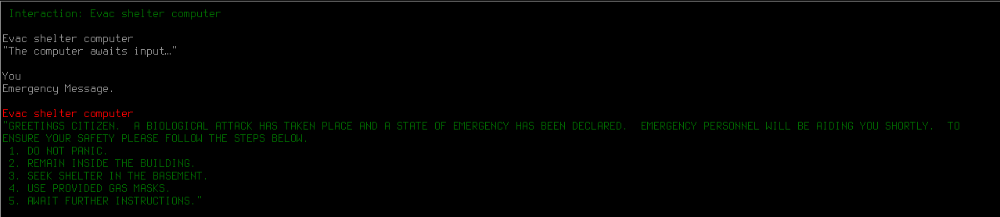There's some instructions for all the panicked evacuees:
- DO NOT PANIC.
- REMAIN INSIDE THE BUILDING.
- SEEK SHELTER IN THE BASEMENT.
- USE PROVIDED GAS MASKS.
- AWAIT FURTHER INSTRUCTIONS.
A decent set of instructions, but only if the government was still coming to help. They're not. There is no government now. I'll try contacting them anyway.
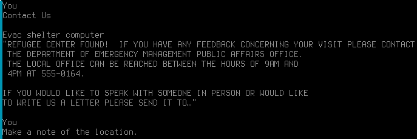Trying to contact the Department of Emergency Management gives us directions to the nearest Refugee Center, a much bigger place than this little evaucation shelter. We make a note of the location so it will be visible on our map.
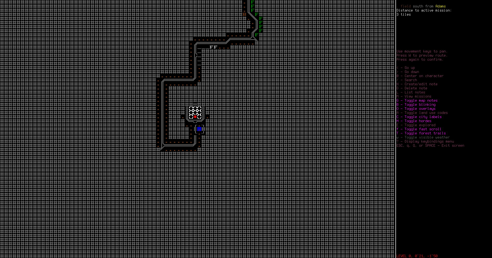It's really far away, over 250 map tiles to the northwest. There's a long winding road leading there, but it leads all over the place and through cities. We do get a peek at the rest of the map though.
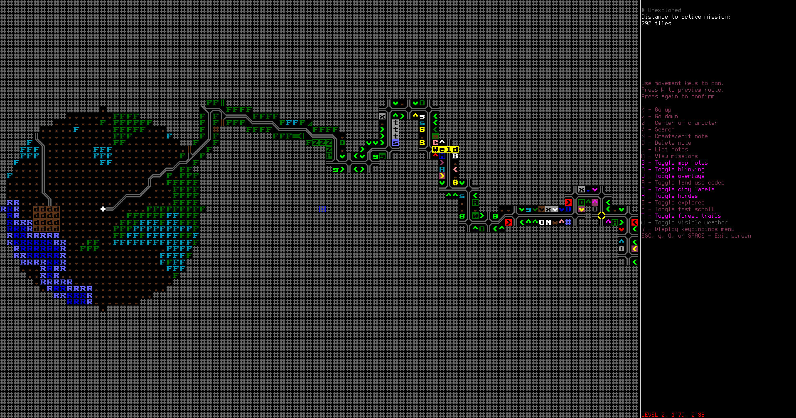There's a big city nearby, Weld, and a some dirt roads in the nearby forest to the east that could be interesting to check out. But first, let's explore the rest of the evac shelter and see what we can scavenge.
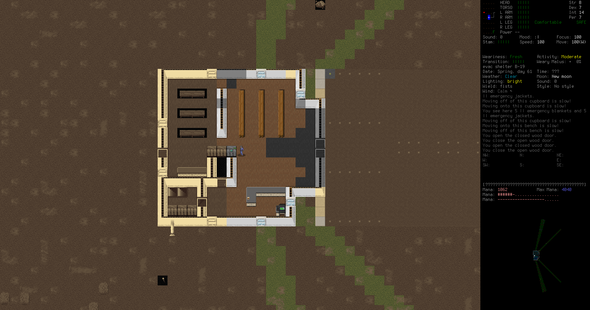 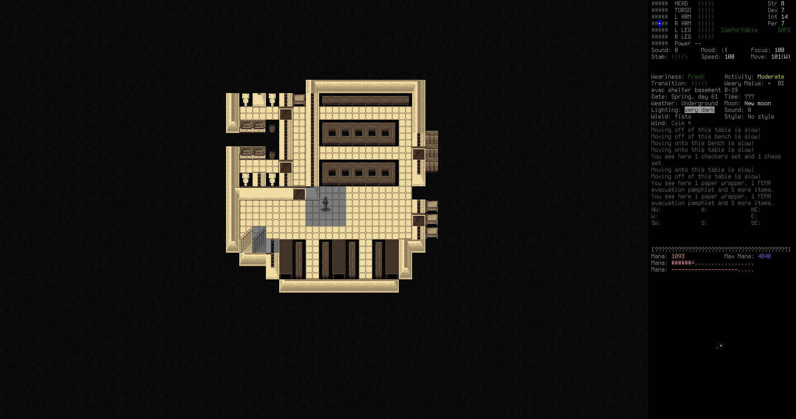Raymon took a walk outside and slipped down into the basement too. The evac shelter is pretty small. There's a few bottles of water and some protein rations in the lockers and cupboards, some empty flashlights, soap, vinegar, bleach. There aren't any of the promised gas masks, and there's nobody else here.
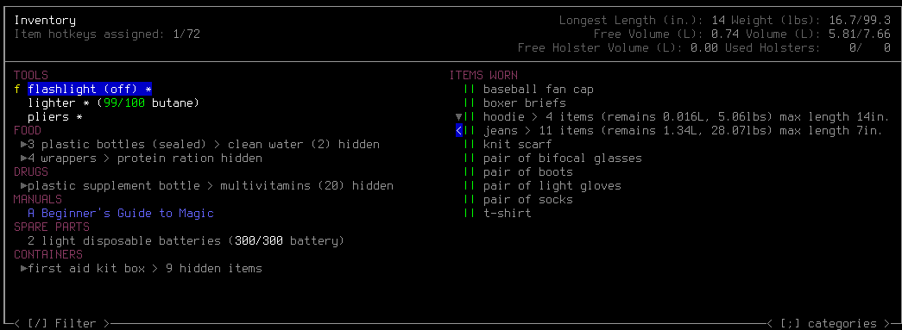I grabbed some of the most useful things from around the shelter and stuffed them into my hoodie pockets and jeans. Some food and water, for starters, then a flashlight, a lighter, and a pair of pliers. The multivitamins and first aid kit will be helpful to keep me alive in the future. I can always come back for the rest of the food and water, but if I get stuck somewhere I need to have a bit with me. There's not a lot else in the shelter.
Raymon needs some goals now, both in the short term, and in the long term. So, in the short term, Raymon wants to get a reliable water supply, a stock of food, and a decent shelter. In the long term, Raymon wants to reach the refugee center and see if there's any safety there. The world has become an extremely hostile place, so it will take all his ingenuity and newfound arcane knowledge, but he just might make it.
We leave the evac shelter and head east along the road. Those dirt roads on our map could mean houses, and we'll either find someone to help us or maybe some useful stuff if they've abandoned their home like we have.
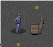 There's a random leather car seat sitting here on the road, on the corner before the house. It's just so strange, walking toward the corner and finding a pristine car seat just sitting there. What could have caused that? Who just abandons a car seat? Raymon ignores it and we move on.
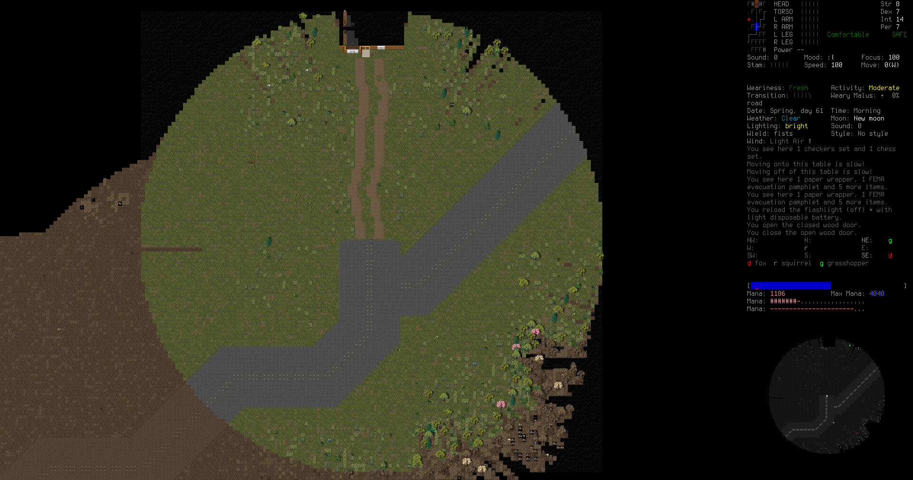There's the house. A long dirt driveway leads up to a house that looks quite empty. We march right up to the mailbox and take a peek. Maybe we'll get a clue as to how long they've been out. There's a slightly damp brochure in the mailbox.
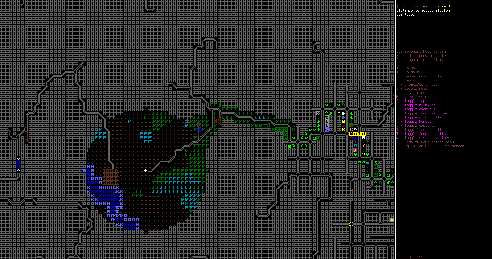This is a small brochure advertising for local restaurants with an address below each entry. Using it will add roads an local restaurants, diners and bars to your map.
We learn a little more about our surroundings from this map. Why don't we remember where we are? Why do we have to learn this from a map? Something's really wrong, but Raymon can't quite figure it out. He stuffs the brochure into his pocket and heads into the house. The door is unlocked, and nobody's home.
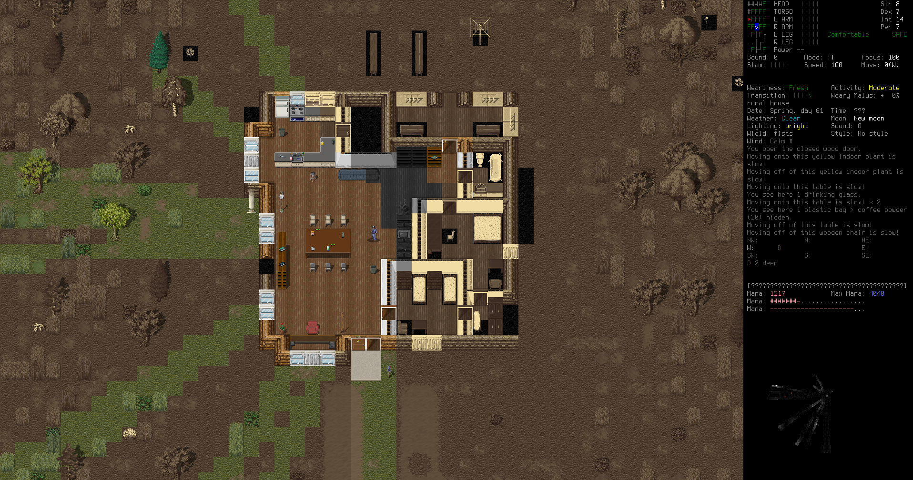It's a nice place. The kitchen storeroom was locked, but Raymon explored everywhere else inside. He grabbed a screwdriver, a hammer, and a pair of scissors just in case he'll need them later, and stole a belt from the bedroom dresser. Whoever lived here won't mind now. There's some medicine in the bathroom, and some books on the shelves, and some food and water in the fridge. The smell made Raymon remember he hadn't eaten breakfast that morning. There's a nice pack of hot dogs in the fridge, and with the power out they won't last long...
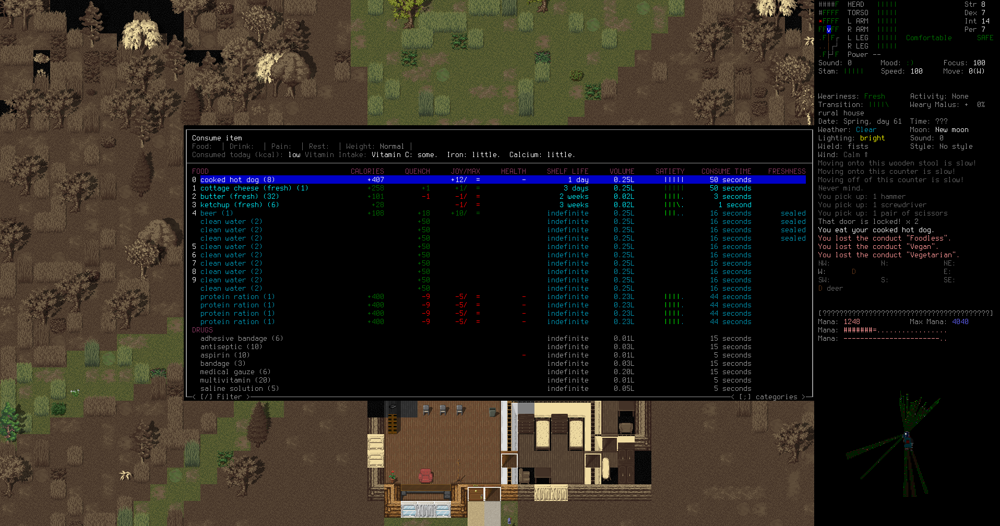Hot dogs are good, filling food, and they taste great. Feeling satisfied, Raymon sits down in an armchair facing the south window and pulls out his magic pamphlet. Might as well figure out if the crazy man passing these out in the streets just before the end really had something after all.
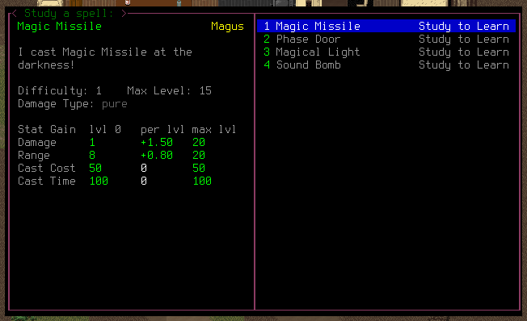Magic missile is a basic damaging spell with two key features: it deals pure damage—nothing can resist it—, and it's castable through walls. This will be the first spell we learn, it gets up to 20 damage at max level and only costs 50 mana.
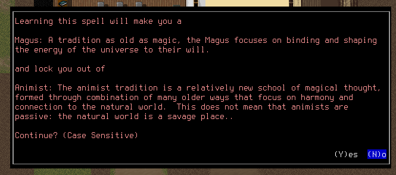It takes Raymon an hour or two to learn it, but eventually he gasps as understanding floods his brain. Learning magic missile will lock us into the Magus class and out of the Animist class, but as we don't have any Animist spells and Raymon needs every tool he can get, he chooses to embrace the Magus tradition. Raymon is now a wizard.
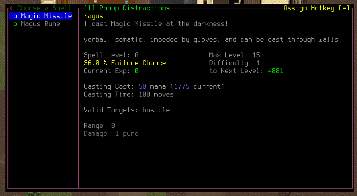We've got a long way to go, but magic missile is now castable. With this weapon, Raymon moves on to explore the other house just a little way down the road.
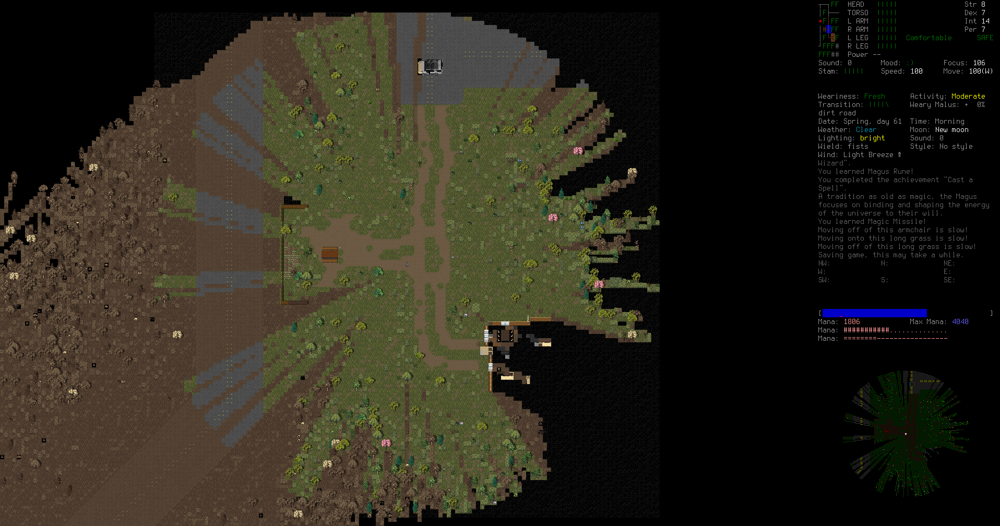The first thing Raymon sees is the car sitting at the end of the driveway. If that car works, it could be his ticket out of the middle of nowhere. If it doesn't work, he could be in for a long hike to the refugee center. But first, Raymon walks past the little fenced-in vegetable garden to explore the house.
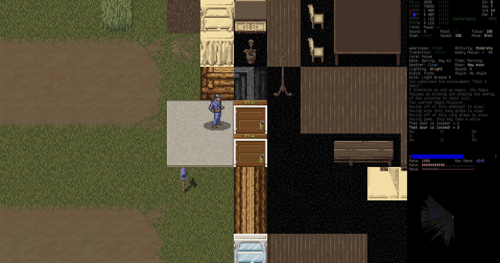The front doors are locked, so Raymon goes around to the other side.
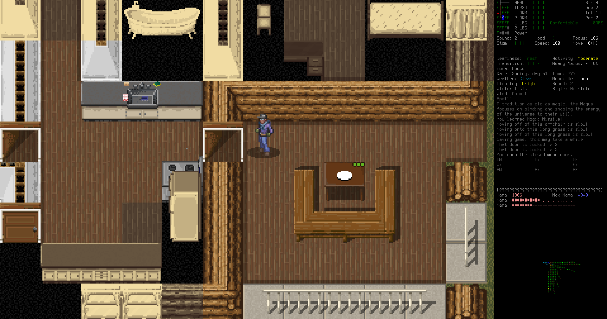Fortunantely, whoever lived here left the back door unlocked. Raymon slips inside and takes a look around. There isn't anything spectacular in here, but there's food and drink, and some spare clothes. After exploring the house, Raymon heads up the driveway toward the car.
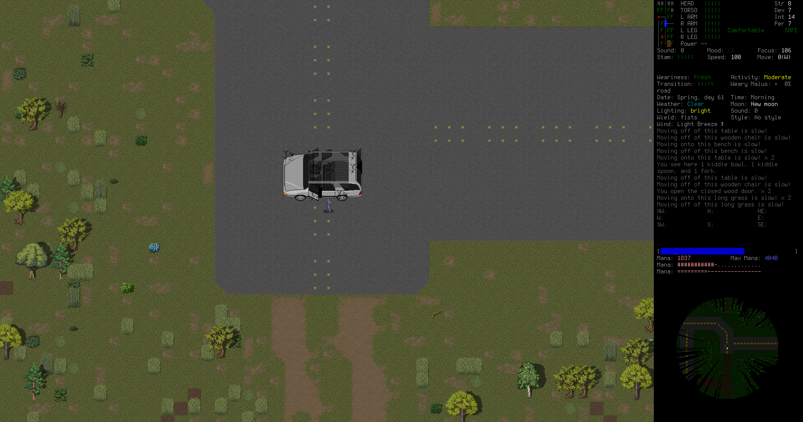The car doesn't look so good, and it smells of gasoline. Raymon pops the hood anyway.
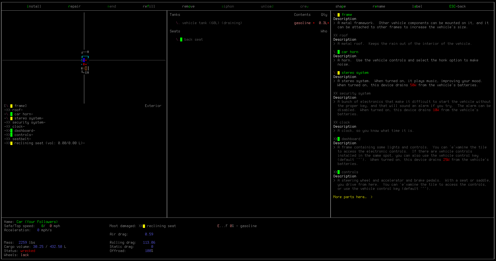It's completely wrecked, and hasn't got any wheels. Well, that's a disappointment. Raymon decides to scout the road toward the city on foot.
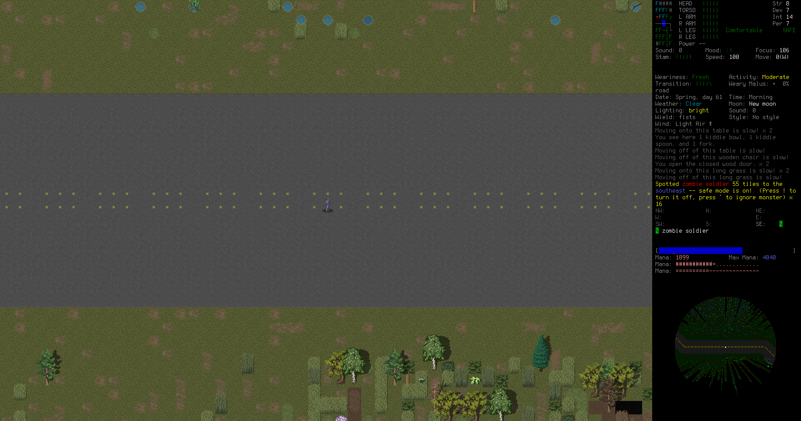It's a pleasant hike most of the way, but as he gets to the last bend before the city limits he sees something in the distance, something stumbling, shambling around a spun-out sports car.
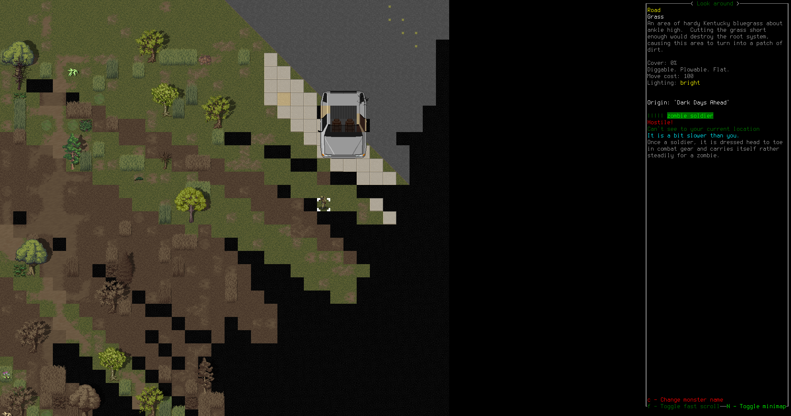Once a soldier, it is dressed head to toe in combat gear and carries itself rather steadily for a zombie.
Nope. Nope. No way. Raymon isn't about to get close to that. He turns around and legs it back to the house.
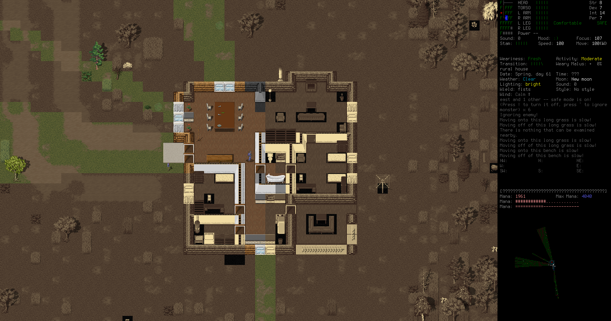Raymon is safe again inside the house with the yard garden, but this isn't going to work long term. There's no food, no water, and he doesn't even have a weapon. What to do? He needs to find someone else, anyone else, and the best place to try would be the refugee center. But that's a long way off, and it'll be a hike through forest, bridges, rivers, and—he's certain—zombies. He'll need a weapon, a pack of supplies, and a lot of courage.
Raymon sits at someone else's kitchen table, set with a kid's bowl and a kid's spoon for a child who will never eat here again. He scrawls a simple plan, just drafting out his thoughts:
First things first, raymon snaps a young tree into a few sturdy sticks and selects the best. Then he lights a fire with the rest of the sticks and starts carving his chosen stick into a fire-hardened wooden spear.
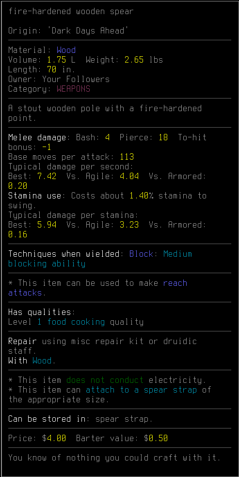 This is a good weapon, and it means he can poke at zombies or other unknown threats without getting too close. Nothing's better in your hand than a good spear. At least, maybe nothing except a gun.
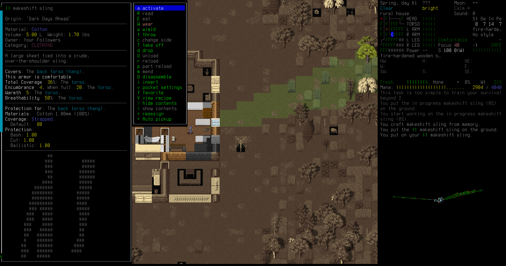Spear in hand, Raymon goes into the bedroom and ties one of the blankets up into a makeshift sling. If he has to, he can bring it out again and use it as a blanket, but hopefully it won't come to that. His food, water, and medicine can go in this sling for the hike. If only he had a backpack... but this will have to do.
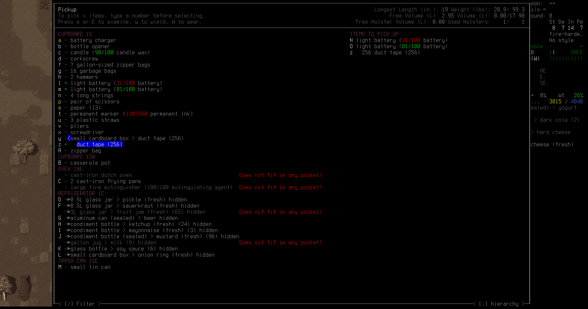Raymon grabs essentials from the bathroom and kitchen. Duct tape, batteries, plastic bags. Anything light and useful goes into the bag. Who knows what he'll have to cook up on his long hike to the refugee center?
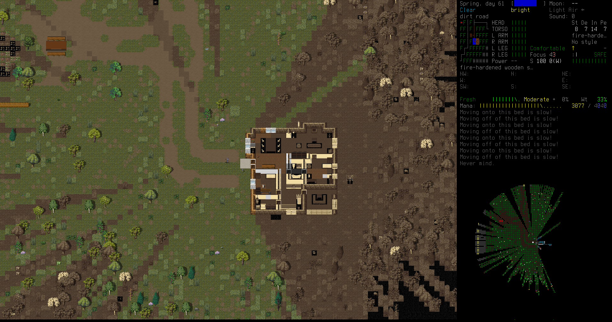He slips out the front door of the house and leaves. He probably won't ever come back here. He might not even be alive in a few days.
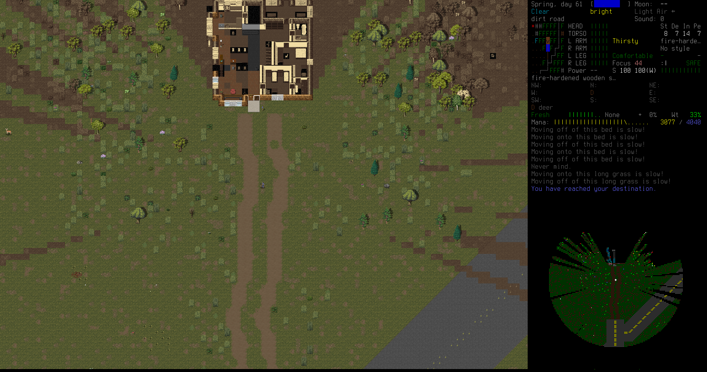Raymon returns to the first house and loots this one too. He gets some more water bottles, and takes the rest of the hot dogs.
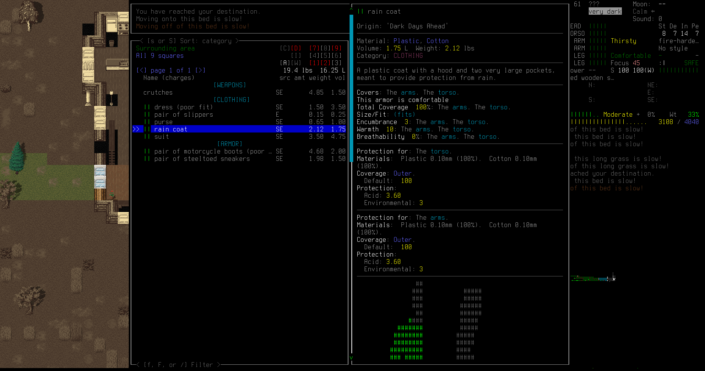Raymon finds a rain coat in one of the dressers; this is a good find with a waterproof hood. If it starts raining, he doesn't want to be stuck in just his hoodie. He slips it on over the rest of his clothes.
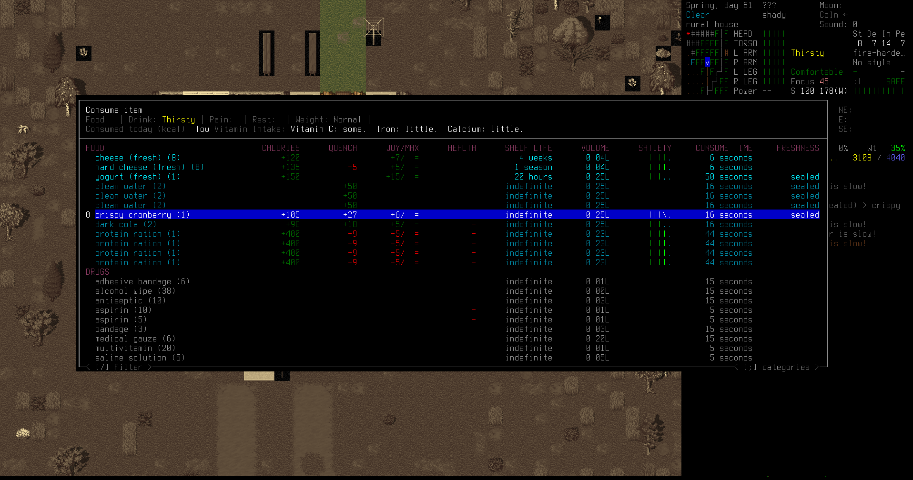A fresh crispy cranberry sitting on a desk in the bedroom calls his name. Raymon downs the can, sets it back on the desk, and heads out of the house to the evac shelter. It's an easy walk.
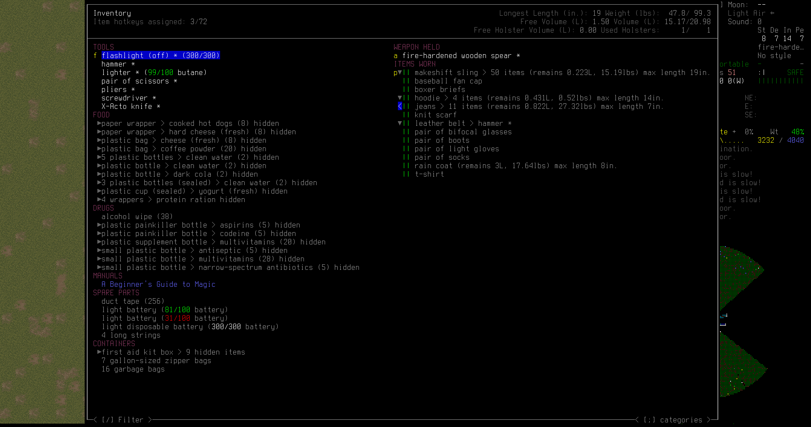Before leaving the evac shelter, Raymon takes inventory again. He's pretty well stocked, with tools, food, water, medicine, and spare materials. It's time to hike.
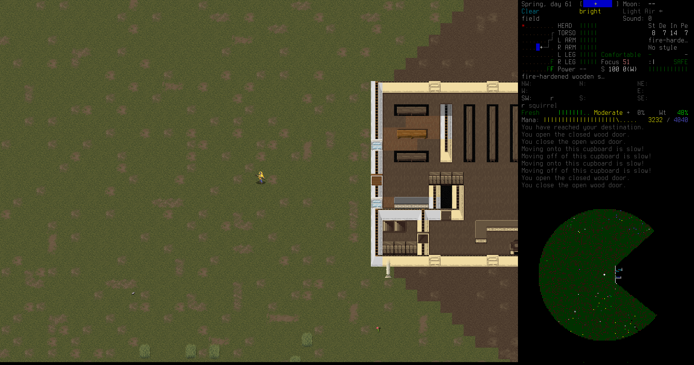Raymon steps out the back door of the shelter to head west toward across the field toward the dump. He'll hit the road there and just keep walking northwest until something gets in his way or he reaches safety. If there is any safety left. Raymon doubts it. He grips his spear tight like a walking stick and puts another foot forward. It is nearly noon.